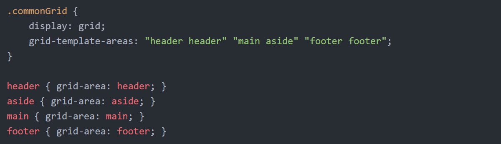
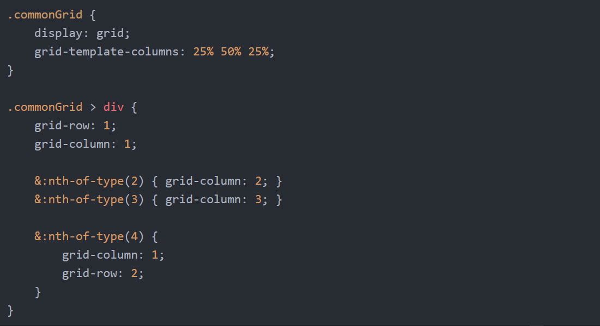
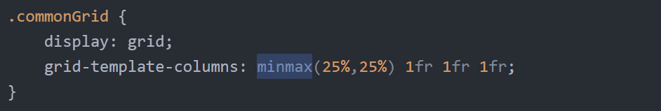
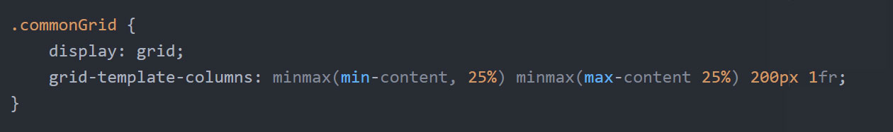
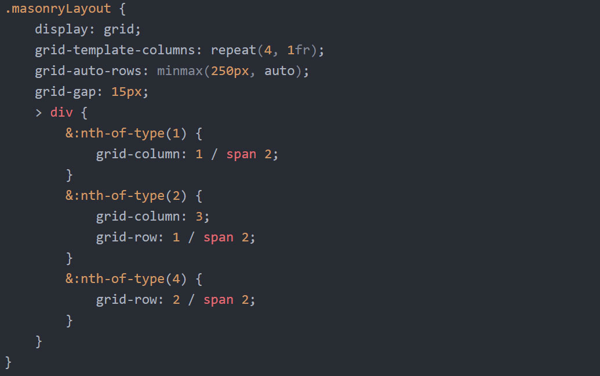

CSS Grid Systems
Why go for CSS Grid ?
Lighter,Easy to understand and maintain.
Define value for only parent HTML element.
Can change layout dynamically.
Can make masonry layout.
Two Dimesional
CSS Grid Container Properties
display
grid
grid-template
grid-gap
grid-auto-flow
grid-auto-columns
grid-auto-rows
display
grid-template-columns
grid-template-rows
grid-template-areas

grid-gap, grid-template-rows and grid-template-columns
Grid Properties
grid-column
grid-row
grid-area
grid-column and grid-row

CSS function values
repeat()
minmax()
repeat()
minmax()

min-content and max-content

CSS Grid Masonry

Tips
justify-self
align-self
column
float
clear
vertical-align
Browser Support:

Flag in
chrome with "Experimental web platform features",
chrome://flags
opera with "Experimental web platform features",
opera://flags
Firefox with "layout.css.grid.enbled",
firefox://flags
Polyfill
Polyfill with old specification
Polyfill
Polyfill with new specification
Polyfill